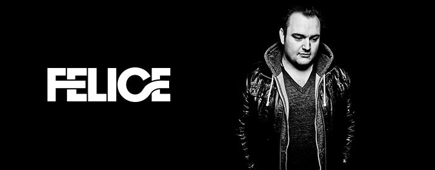

Club Circus
Als Sohn eines Radiomoderators durfte Felice bereits in jungen Jahren die ersten
Erfahrungen in Sachen Musik sammeln. Zum 18. Geburtstag beschenkte er sich
selbst mit zwei Turntabels und einem Zweikanalmischer.
Der Electric Love Resident DJ stellte sein Können bereits 2012 beim Club Circus mit
Dave Pap und Steve Aoki, sowie beim Donauinselfest und Electric Love 2013 und
2014 unter Beweis, wo er vor 35.000 Besuchern spielte.
Felice zeichnet sich zudem für die Electric Love Anthems Electric Love2013 und The
Moment2014 verantwortlich.
Für Aufsehen sorgte der junge Salzburger als er das ausverkaufte Electric Love
2014 mit einem eigenen Orchester auf der Mainstage eröffnete.
Sein Leitsatz ist Fuck Genre– Felice lässt sich ungern in eine Schublade stecken,
sondern möchte einfach elektronische Musik machen. Hier stimmen ihm viele, auch
große DJ-Kollegen zu – ihm steht eine große Zukunft bevor.